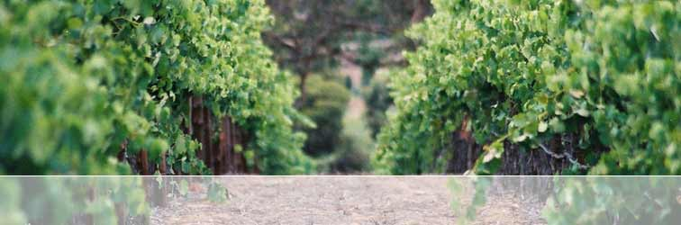
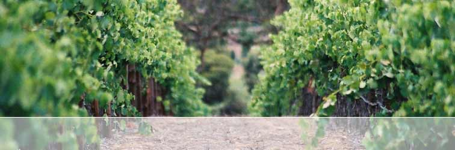
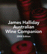
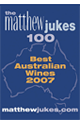
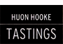
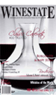
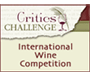
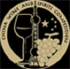

The MAX V has become the first Bordeaux Style blend grown, vintaged and bottled exclusively from the Clare Valley containing 5 of the noble varieties (Cabernet Sauvignon, Merlot, Cabernet Franc, Malbec and Petit Verdot) and using an innovative barrel fermenting technique, called the 'Vinification Integrale' developed by one of the world's most prestigious French cooperages, Tonnellerie Baron.
Matured for 18 months in 100% new French oak from Tonnellerie Baron, Tonnellerie Demptos and Seguin Moreau, from utilising 5 different forests and 4 levels of toasting culminating in 19 variations of oak. The cooperages chosen supply some of the finest producers in the world and include Opus One (Mondavi-Napa Valley), Château la Dominique (Saint Emilion), Château Smith Haut Lafitte, Château Malartic Lagravière (Bordeaux- France), Cloudy Bay and Te Mata Estate (New Zealand).
Although production is limited, the 2005 MAX V is now available to all
wine enthusiasts and advocates of small batch winemaking. Please register
your interest by contacting info@rocwines.com.au
or visit ourORDERING PAGE for further details.
Member's Login Page
Proceed to members section – with Behind the
scenes, winemakers notes, barrel sample analysis, interviews and
a comprehensive photo gallery.
 |
What Australia's best selling wine author has to say about
the 2005 MAX V Having been awarded a 95/100, a 5 Glass and a 5 Star Rating, the 2005 MAX V, featured in James Halliday’s 2008 Australia’s Best of the Best Cabernet Blends, listed in the TOP 10 amongst the likes of Houghton Jack Mann, Yarra Tering Dry Red No. 1 and Henschke Lenswood Abbott’s Prayer. Click
here to view James Halliday’s 2008 Best of the Best Australian
Cabernet Blends. |
 |
Matthew Jukes Top 100 Best Australian Wines 2007 - London
|
|  | Huon Hooke |
|  | Winestate Magazine Click here for the review from the July / August 2007 Edition of Winestate Magazine. 'Real class', noted one judge. Great colour,
Opulent jubey black fruit meets chocolaty oak on the nose. Long
and velvety in the mouth; brimming over with mouthfilling sweet
fruit and toasty wood flavours. $75.00 |
|  | Critics Platinum Award |
|  | Gold Medal |
| Gold Medal The 2005 MAX V is a fascinating and attractive wine that bears
resemblance to Bordeaux reds from warm years. The aromas and flavours
are redcurrant and spice, and the tannins are firm and fine. Oak
comes in on the finish but doesn’t overwhelm. – Highly
Recommended |